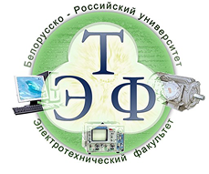
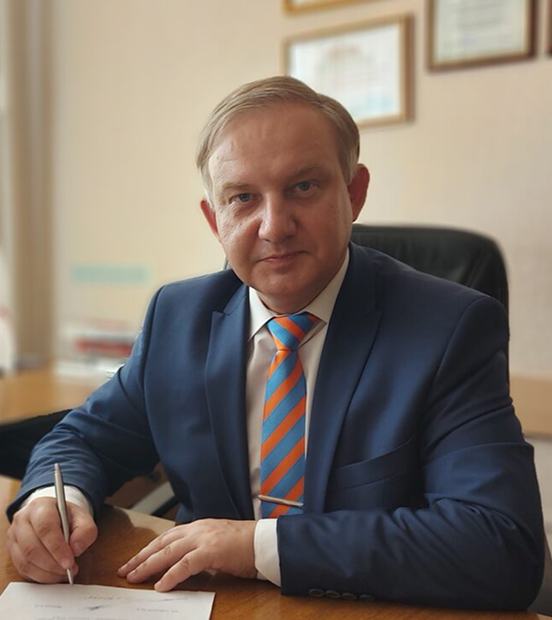

Белорусско-Российский университет
Наш проект зародился и развивается на базе Белорусско-Российского университета (БРУ) — ведущего научно-образовательного центра, объединяющего передовые инженерные школы двух стран.
Мы переносим классические промышленные процессы в эпоху цифровых технологий. Опираясь на исследовательскую базу кафедры «Оборудование и технология сварочного производства», наша команда разрабатывает решения, которые делают контроль качества автоматическим, прозрачным и независимым от человеческого фактора.
Каждый регистратор проходит полный цикл апробации в научно-производственных лабораториях университета. Наличие собственной базы неразрушающего контроля позволяет нам оперативно тестировать оборудование, калибровать датчики и адаптировать систему под жесткие стандарты реального сектора.

Декан электротехнического факультета, ведущий преподаватель и ключевой исследователь Белорусско-Российского университета. Более 15 лет Сергей Владимирович успешно совмещает управление факультетом и фундаментальную науку с практической разработкой в области автоматизации, контроля и мониторинга параметров дуговой сварки. Как эксперт на стыке промышленного инжиниринга и технологий Индустрии 4.0, он стал главным конструктором и идеологом программно-аппаратного комплекса мониторинга.
Идея создания независимой системы контроля родилась на кафедре «Оборудование и технология сварочного производства» БРУ. В условиях современного производства стандартный визуальный контроль швов (ОТК) уже не исключал человеческий фактор на 100%. Возникла задача: создать «черный ящик» для сварочного аппарата, который фиксировал бы параметры физических процессов в режиме реального времени.
Команда под руководством С.В. Болотова пошла по пути разделения обязанностей. Вместо дорогих и громоздких промышленных компьютеров они разработали компактный, доступный регистратор с блоком датчиков, а сложную аналитику, графики и ведение баз данных перенесли в удобные мобильные и web-приложения. Это позволило кардинально снизить стоимость внедрения системы для предприятий.

Сегодня университетский стартап перерос в зрелое технологическое решение. Разработанные комплексы (такие как РСП-БРУ-01 и СМСО-БРУ-01) уже прошли успешную промышленную апробацию и эксплуатируются на крупнейших предприятиях, включая РУП «ПО „Белоруснефть“» и ОАО «БЕЛАЗ». Система продолжает адаптироваться под специфику новых заказчиков, подтверждая статус надежного инструмента для ответственных строительных и машиностроительных конструкций.
